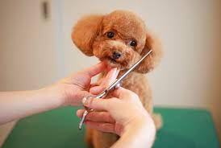
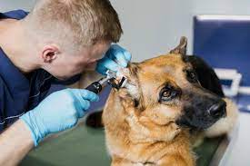
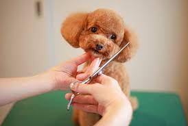
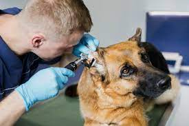
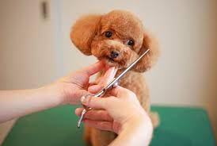
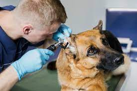

UM CUIDADO ESPECIAL PRO SEU MASCOTE
MAIS QUE ESPECIAL
AGENDE AGORA
NOSSOS SERVIÇOS


Banho
Tosa
Veterinário
Oferecemos serviços de banho, tosa e atendimento veterinário com qualidade excepcional e cuidado especializado,
garantindo que seu animal de estimação receba os melhores cuidados possíveis para seu bem-estar.